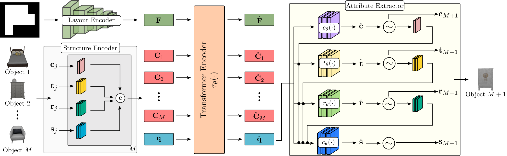

Examples of generated bedrooms, living rooms, dining rooms and libraries conditioned on various floor plans and room types. For all visualizations we used NVIDIA Omniverse.
Examples of generated bedrooms, living rooms, dining rooms and libraries conditioned on various floor plans and room types. For all visualizations we used NVIDIA Omniverse.
Given an empty or a partially complete room of a specific type together with its shape, as a top-down orthographic projection of its floor, we want to learn a generative model that populates the room with objects, whose functional composition and spatial arrangement is plausible. In contrast to prior work, we pose scene synthesis as an unordered set generation problem and introduce ATISS, a novel autoregressive transformer architecture to model this process. In particular, our model generates meaningful furniture arrangements by sequentially placing objects in a permutation-invariant fashion. We train ATISS to maximize the log-likelihood of all possible permutations of object arrangements in a collection of training scenes, labeled only with object classes and 3D bounding boxes.
Objects in a scene are represented as labeled 3D bounding boxes and we model them with four random variables that describe their category, size, orientation and location, \(o_j = \{\bf{c}_j, \bf{s}_j, \bf{t}_j, \bf{r}_j\}\). The category \(\bf{c}_j\) is modeled using a categorical variable over the total number of object categories in the dataset and the size \(\bf{s}_j\), location \(\bf{t}_j\) and orientation \(\bf{r}_j\) are modelled with mixture of logistics distributions.

During training, we start from a scene with M objects (coloured squares, here \(M=5\)), we randomly permute them and keep the first T objects (here \(T=3\)). We task our network to predict the next object to be added in the scene given the subset of kept objects (highlighted with grey) and its floor layout feature \(\bf{F}\). Our loss function is the negative log-likelihood (NLL) of the next object in the permuted sequence (green square).
During inference, we start with an empty context embedding \(\bf{C}\) and the floor representation \(\bf{F}\) of the room to be populated and autoregressively sample attribute values from the predicted distributions. Once a new object is generated, it is appended to the context \(\bf{C}\) to be used in the next step of the generation process until the end symbol is generated. To transform the predicted labeled bounding boxes to 3D models we use object retrieval. In particular, we retrieve the closest object from the dataset in terms of the euclidean distance of the bounding box dimensions. A pictorial representation of the generation process is provided in the figure below.

Our network consists of four main components: (i) the layout encoder that maps the room shape to a feature representation \(\bf{F}\), (ii) the structure encoder that maps the objects in the scene into per-object context embeddings \(\bf{C} = \{C_j\}^M_{j=1}\) , (iii) the transformer encoder that takes \(\bf{F}\), \(\bf{C}\) and a query embedding \(\bf{q}\) and predicts the features \(\bf{\hat{q}}\) for the next object to be generated and (iv) the attribute extractor that predicts the attributes of the next object to be added in the scene.
Our model can be used to generate furniture arrangements conditioned on a floor plan and a specific room type. In the following, we show examples of generated bedrooms (first row), living rooms (second row), dining rooms (third row) and libraries (fourth row) using our model conditioned on various floor plans. We can easily notice that our model consistently generates plausible room arrangements that preserve the functional properties of all objects in the scene. Note that for all visualizations, we used NVIDIA Omniverse.


In the following, we show scene completion examples. Starting from a partially empty scene (left column), our model populates it by generating meaningful object arrangements.


Our model can also be used to provide object suggestions given a scene and user specified location constraints. In particular, a user specifies a region of acceptable positions to place an object (here marked as a red box) and our model suggests suitable objects to be placed inside this area of valid locations. In case the user specifies a region that intersects with other objects in the scene and our model cannot suggest a meaningful object to be placed there, it simply suggests to add nothing (see first column).


Another useful application of our model is its ability to identify unnatural furniture layouts and reposition the problematic objects such that they preserve their functional properties. The problematic object, as identified by our model, is highlighted with green. As soon as a problematic object is identified, our model repositions it in a more suitable location.


If you found this work influential or helpful for your research, please consider citing
@InProceedings{Paschalidou2021NEURIPS,
author = {Despoina Paschalidou and Amlan Kar and Maria Shugrina and Karsten Kreis and Andreas Geiger
and Sanja Fidler},
title = {ATISS: Autoregressive Transformers for Indoor Scene Synthesis},
booktitle = {Advances in Neural Information Processing Systems (NeurIPS)},
year = {2021}
}